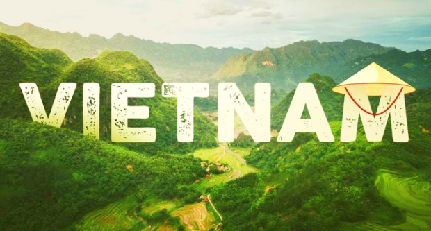
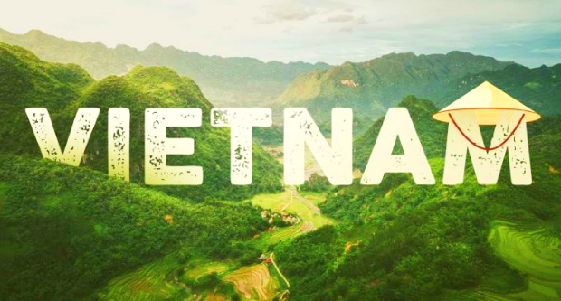

Điểm du lịch nổi tiếng tại Hà Giang
Hà Giang thu hút du khách bởi vẻ đẹp thiên nhiên hoang sơ, bình dị, yên bình. Các điểm du lịch nổi tiếng mà bạn nhất định phải ghé khi đến Hà Giang là Hoàng Su Phì, đèo Mã Pí Lèng, cao nguyên đá Đồng Văn, Phó Bảng, cột cờ Lũng Cú, động Lùng Khúy, cửa khẩu Săm Pun, hồ Noong, thung lũng Sủng Là, phố cổ Đồng Văn,... Cùng với cảnh đẹp là nhiều món ăn mang hương vị núi rừng hấp dẫn như cháo ấu tẩu, thắng cố, rêu nướng, bánh cuốn trứng,...
Du khách ghé thăm cao nguyên đá Đồng Văn, Hà GIang
Điểm du lịch Sapa
Vùng núi Tây Bắc Việt Nam nổi tiếng với núi non hùng vĩ, cảnh đẹp nên thơ. Sapa - một trong những điểm du lịch hấp dẫn của Tây Bắc, níu chân du khách bởi vẻ đẹp lãng mạn của bản Cầu Mây, Cát Cát; những thửa ruộng bậc thang uốn lượn; những ngọn núi chạm mây như đỉnh Fansipan, núi Hàm Rồng; nét văn hóa độc đáo của người Tây Bắc; cùng nhiều món đặc sản thơm ngon của đồng bào nơi đây như lợn cắp nách, cá hồi, cá tầm tươi,...
Sapa - địa điểm du lịch nổi tiếng bạn nhất định phải đến một lần trong đời
Địa điểm du lịch Hà Nội
Thủ đô Hà Nội ngàn năm văn hiến là một trong những nơi mà bất kỳ người Việt Nam nào cũng muốn được đặt chân đến một lần trong đời. Du lịch Thủ đô, du khách sẽ được ghé thăm những điểm tham quan nổi tiếng như Quảng trường Ba Đình, Văn Miếu Quốc Tử Giám,... hay chiêm ngưỡng cảnh đẹp Hồ Tây, Hồ Gươm, Hoàng thành Thăng Long,... Bên cạnh đó, du khách còn được nếm thử nhiều món ngon đặc sắc như cốm làng Vòng, bún chả, phở,...
Du khách tham quan và chụp hình tại Hồ Gươm Hà Nội
Địa điểm du lịch Ninh Bình
Nhắc đến điểm du lịch miền Bắc Ninh Bình, hẳn nhiều du khách sẽ liên tưởng ngay đến quần thể danh thắng Tràng An, Tam Cốc – Bích Động, cố đô Hoa Lư, hang Múa, chùa Bái Đính, động Am Tiên,... Ngoài cảnh đẹp, vùng đất Ninh Bình còn níu chân người tứ phương bởi những món đặc sản thơm ngon như cơm cháy, bún mọc, miến lươn, thịt dê núi,...
Vẻ đẹp nên thơ, yên bình của danh thắng Tràng An
Địa điểm du lịch Quảng Ninh đẹp nhất
Quảng Ninh thuộc vùng Đông Bắc nước ta, nơi đây mang vẻ đẹp núi non kỳ thú, sông nước, biển đảo nên thơ. Nổi bật phải kể đến vịnh Hạ Long, được UNESCO công nhận là di sản thiên nhiên thế giới. Cùng nhiều điểm tham quan nổi tiếng khác như phố cổ Hạ Long, bãi Cháy, bán đảo Tuần Châu, chợ đêm, bảo tàng Quảng Ninh,... Du lịch Quảng Ninh, ngoài khám phá cảnh đẹp, đừng quên thưởng thức các món đặc sản thơm ngon như chả mực, nem chua, bánh gật gù,....
Nhất định phải thưởng ngoạn Vịnh Hạ Long - Kỳ Quan Thiên Nhiên Thế Giới một lần trong đời
Địa điểm du lịch Hải Phòng
Hải Phòng - Thành phố hoa phượng đỏ luôn là địa điểm lý tưởng cho các chuyến du lịch ngắn ngày. Các điểm du lịch Hải Phòng hết sức đa dạng với phong cảnh tuyệt đẹp, kèm theo đó là văn hóa ẩm thực độc đáo trở thành nơi níu giữ dấu chân của du khách. Các điểm du lịch nổi tiếng mà bạn nhất định phải ghé khi đến Hải Phòng là bãi biển Đồ Sơn, đảo Hòn Dấu, đảo Cát Bà, khu di tích Tràng Kênh, Tuyệt Tình Cốc,...